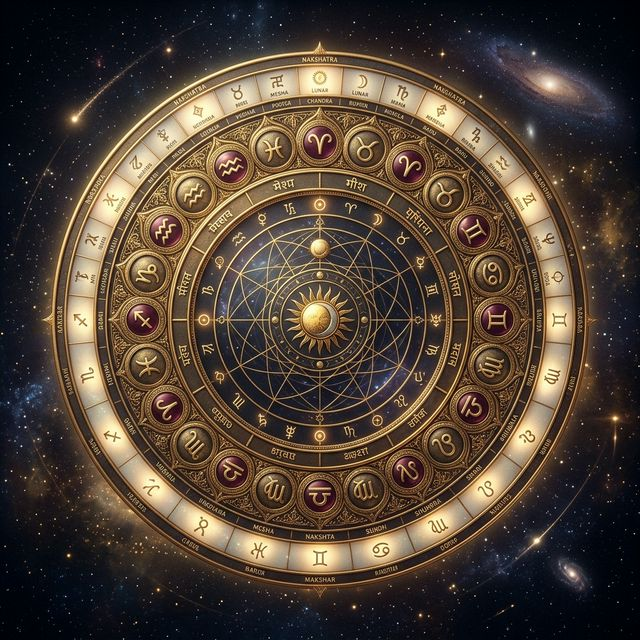

What is Vedic Astrology?
Jyotiṣa (Vedic Astrology) is considered one of the six Vedāṅgas (limbs of the Vedas), functionally acting as the "eye" of the Veda. It is a highly precise astronomical and predictive system developed thousands of years ago in ancient India. Unlike modern systems that focus solely on psychology, Jyotiṣa provides a mathematical blueprint of karma, mapping out precise timing for life events and overarching life paths.
Who was Maharṣi Pārāśara?
Maharṣi Pārāśara is revered as the father of classical Jyotiṣa. He is the author of the foundational text, the Bṛhat Pārāśara Horā Śāstra (BPHS). His teachings outline the most complete and systematic approach to astrological interpretation, which forms the bedrock of the "Pārāśarī" tradition followed by genuine practitioners today.
What is BPHS?
The Bṛhat Pārāśara Horā Śāstra is essentially the encyclopedia of Vedic Astrology. Covering over 100 chapters, it details everything from basic planetary significations and sign traits, to the complex mathematics of casting divisional charts (Vargas), calculating planetary periods (Daśās), identifying special combinations (Yogas), and prescribing remedies.
The Paramparā
Knowledge of Jyotiṣa is passed down through an unbroken lineage of teachers—a Paramparā. Our tradition originates from the 16th-century seer and saint, Sri Achyutananda Das of Odisha. He was one of the "Panchasakha" (five friends) and a profound mystic who authored numerous critical works on Jyotiṣa and spirituality.
This sacred knowledge has been preserved through generations of traditional astrologers in Puri, Odisha. Today, this lineage is led by the esteemed Pandit Sanjay Rath, founder of শ্রী Jagannath Center (SJC), who has systematically brought this ancient wisdom to the modern era. You can learn more about this unbroken lineage at srath.com.
Key Concepts Explained
Rāśi (Signs)
The 12 zodiac signs, representing the environment or field where planetary energies operate.
Grahas (Planets)
The 9 visible 'grabbers' of consciousness (including Rahu/Ketu), the active agents of karma.
Bhāvas (Houses)
The 12 areas of life (career, marriage, wealth, etc.) where karma unfolds.
Nakṣatras
The 27 Lunar Mansions. The deepest, most psychological layer of the Zodiac.
Daśā
The unique planetary period system that dictates *when* specific events will manifest in life.
Yogas
Specific planetary combinations that form unique patterns of success, struggle, or spirituality.

Jyotiṣa vs Western Astrology
| Feature | Vedic (Jyotiṣa) | Western |
|---|---|---|
| Zodiac System | Sidereal (Fixed to actual star positions) | Tropical (Fixed to the seasons/equinox) |
| Core Focus | Moon & Ascendant (Mind & Self) | Sun Sign (Ego & Expression) |
| Predictive Tools | Daśā (Planetary periods) & Transits | Primarily Transits & Progressions |
| Approach | Destiny, Karma, Timing & Remedies | Psychological traits & Personality |